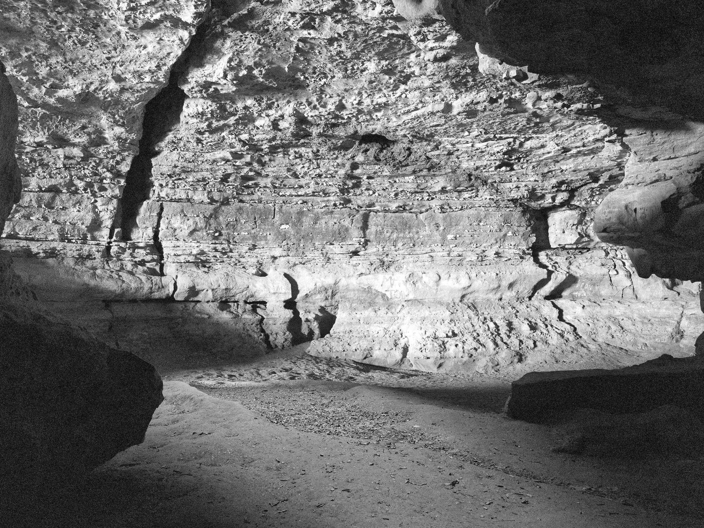
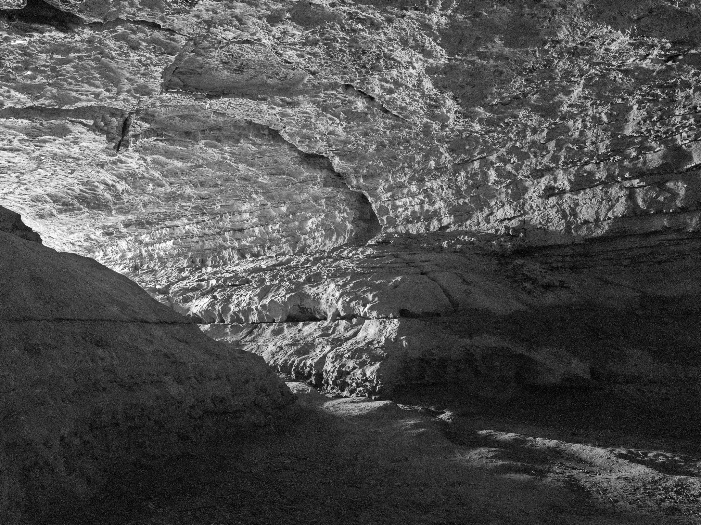
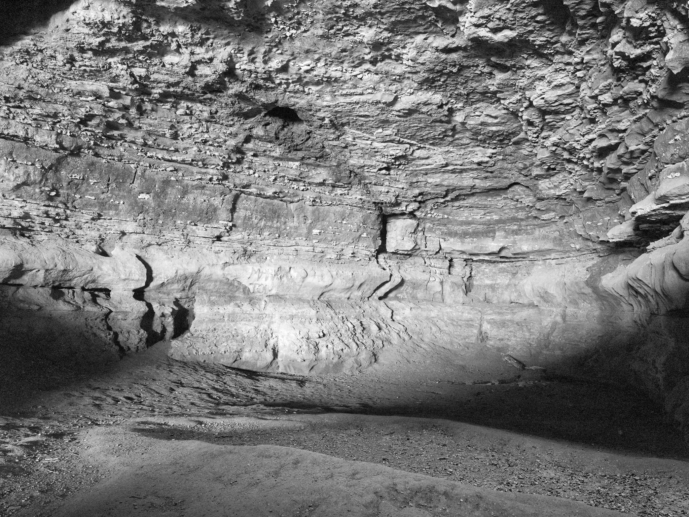
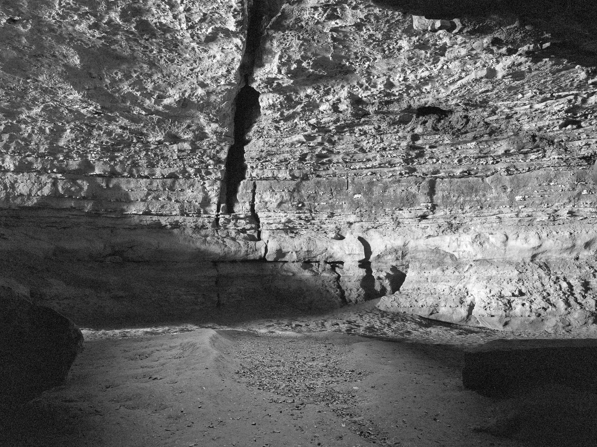
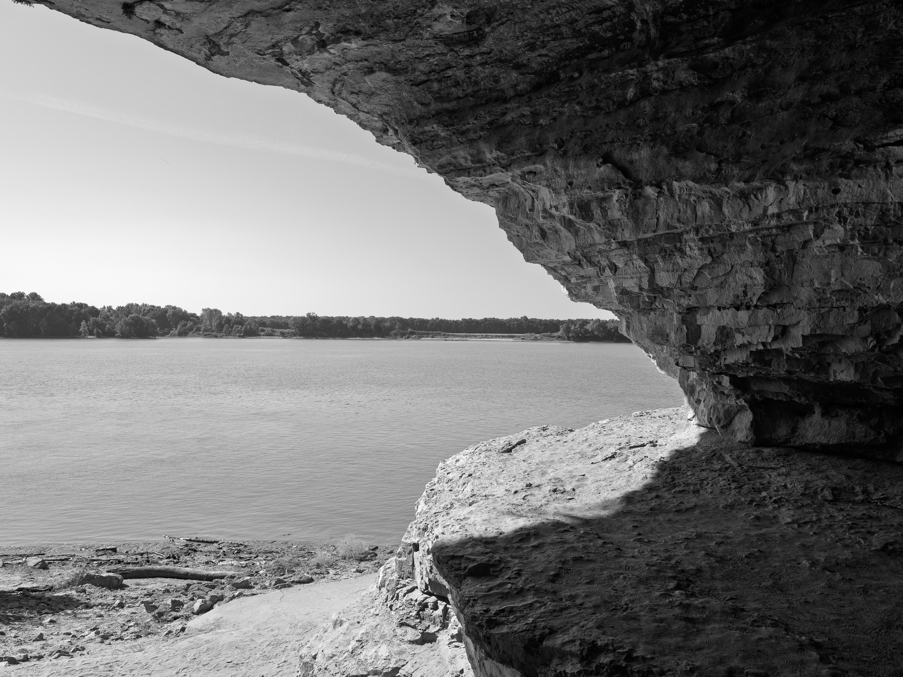
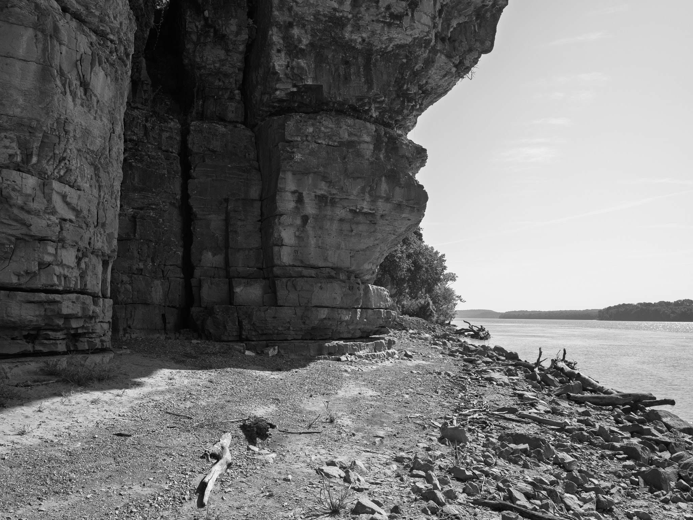
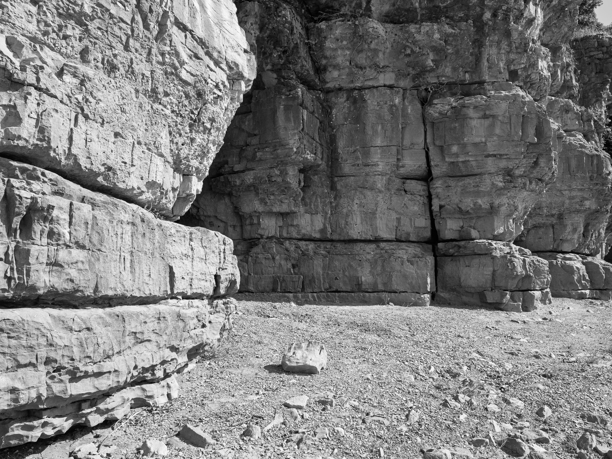

A 204-acre Illinois state park on the Ohio River bluffs around a cave that was a station on the Reverse Underground Railroad.







These photographs are in the public domain (CC0 1.0). No permission is required. No credit is required.
Optional credit line: Public Lands Institute, publiclandsinstitute.net/sites/cave-in-rock-state-park.html
To tell PLI where an image was used, write to contact@publiclandsinstitute.net.